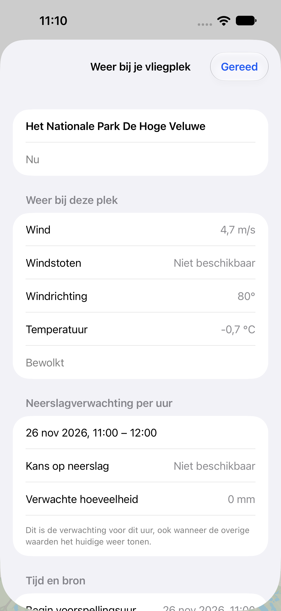

Understand the restriction.
See why a zone matters and which conditions apply. The original source information stays available so you can see what the explanation is based on.

iPhone & Android · app in Dutch and English
Your flying spot, flight conditions and weather in one place.
Android 1.0.6 has been approved and is rolling out; iPhone 1.0.6 is awaiting Apple review. The new free offer applies from version 1.0.6; the older iPhone store version may still show the old trial.
Your home country. Free.
With ads, without a purchase.
Want all supported countries without ads? Premium is optional: A monthly or yearly subscription. The app shows the current store price before you buy. The annual amount is paid upfront. A purchased subscription renews automatically until cancelled. Compare free and Premium.

From your place to your next step
Use your location, search for an address or choose a point on the map.
Read the available zones and conditions for your drone, with wind and weather alongside.
Read the reason and original conditions in the app. Missing information stays visible.
More than a map colour
See why a zone matters and which conditions apply. The original source information stays available so you can see what the explanation is based on.
See wind, temperature and available precipitation forecasts at your selected place. The source and time are shown; missing values stay missing.

Historical Dutch iPhone 1.0.4 images, captured on 26 November 2026. The free/Premium choice in 1.0.6 differs. Available values and conditions at your own location may differ.
Start with your location
The place check comes first. Choose your fixed home country once for free with ads, or use all supported countries with ad-free Premium.
Free
No purchase or new trial to start. No automatic payment without your confirmed purchase.
Premium
The annual amount is paid upfront. Only a subscription you explicitly buy renews automatically until cancelled in its store. Check the final store price before confirming.
Your payment choice does not change flight rules, missing source data or the need for permission. Existing trial or subscription?
Know what your app supports
iPhone: source maps for the Netherlands, Belgium, Germany, Denmark, Finland, France, Luxembourg, Portugal, Spain, Sweden and Switzerland.
Android: source maps for the Netherlands, Belgium and Germany.
Sources and additional checks differ by country. A country directory entry does not mean a connected or complete map. Switzerland is not an EU country. Store distribution remains the Netherlands and Belgium; English does not mean worldwide availability.
FAQ
The map, conditions and weather for one supported country. You do not need to buy a subscription to start. The free version includes ads.
Choose your fixed home country once from the countries supported by your version. Use its map, conditions and weather for free with ads. Choose Premium to check places in other supported countries.
All source countries supported by your iPhone or Android version, without ads. Choose a monthly or yearly subscription. The app shows the current store price before you buy; the annual amount is paid upfront. Free remains a usable place check for one country.
Android supports source maps for the Netherlands, Belgium and Germany. iPhone supports the Netherlands, Belgium, Germany, Denmark, Finland, France, Luxembourg, Portugal, Spain, Sweden and Switzerland. Sources and additional checks differ by country. A country in the guide does not necessarily have a connected source map. Check the available countries in your app version.
Open Fly now and use your location or search for a place. Check the map point and your drone profile. Read the answer and the points beneath it, then open the main action for the next step, such as viewing conditions or arranging permission.
A valid trial that had already started before this update keeps its remaining time with all supported countries and no ads. Afterwards, you can continue with one free country and ads. It does not turn into an automatic payment. New installations of version 1.0.6 start directly with the free version, without a new trial.
Yes. A valid subscription continues to give you all source countries supported on your platform, without ads. Manage it through Apple or Google Play. Your store shows the price, renewal date and any changes that apply to your subscription.
You buy Premium only by confirming the purchase yourself through Apple or Google Play. A purchased subscription renews automatically until cancelled. Manage or cancel it through the same store; deleting the app does not cancel it. Restore purchases in the app using the same store account. An Apple purchase does not automatically become a Google Play purchase.
The free version uses a Google AdMob banner and requests non-personalized ads. You can manage your privacy choices in the app. Depending on your choices and availability, limited ads or no ads may be shown. Your place check and weather remain usable.
Yes. Google may process your IP address, technical device identifiers, ad interactions and performance data. Limited ads may use storage solely to detect invalid traffic and prevent fraud. Read your platform’s privacy policy for recipients, purposes and choices.
The loaded map has not shown a matching restriction. Temporary or local rules and other checks may still be missing. The points beneath your answer show what you still need to check. Check your own spot again shortly before flying.
Privacy
No separate DroneGlance account. Your profile and saved places stay on your device. Maps, search, weather, stores and advertising providers do process internet requests and technical data.
The free version requests non-personalized ads through Google AdMob. Manage advertising privacy choices in the app. Depending on your choice and availability, limited ads or no ads may appear. Your free country remains usable.
iOS privacy ↗Contact the maker
Tell us your app version, platform, country and the condition you are looking at. Do not send registration numbers, pilot certificates or payment details.
Email de Bruin StudioFor purchases, cancellation and restoring access, use the same Apple or Google Play account used for the purchase. Deleting the app does not cancel a subscription. Apple subscription help · Google Play subscription help. Apple and Google Play purchases are separate. Full terms in Dutch.
DroneGlance
Your fixed home country free with ads. iPhone and Android, with Dutch and English in version 1.0.6. Store distribution: Netherlands and Belgium.